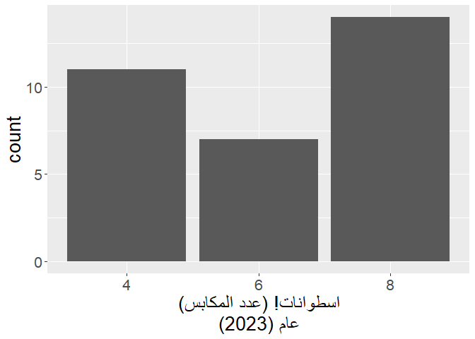

The goal of rtlr is to help you print correctly right-to-left text in the console and in plots. It was motivated by this Stack Overflow question from 2018. As of now, its main and only function is str_rtl(), which wraps a string with RTL-embedding Unicode characters.
Installation
You can install rtlr from CRAN with:
install.packages("rtlr)Alternatively, you can install the development version of rtlr from GitHub with:
# install.packages("devtools")
devtools::install_github("matanhakim/rtlr")Basic Example
This is a basic example of fixing an RTL issue when writing in Hebrew. Hebrew is written right-to-left, so punctuation marks (such as “,” or “.”) should come at the left side, i.e. the end, of a sentance.
library(rtlr)
x <- "הנקודה צריכה להיות בסוף המשפט."
# `x` says in Hebrew:
# "the dot should come at the end of the sentance."
cat(x)
#> הנקודה צריכה להיות בסוף המשפט.
cat(str_rtl(x))
#> הנקודה צריכה להיות בסוף המשפט.Notice how the dot ends up in the left side, where it should be.
Example in a Plot
You can also use it in plots, for example:
library(ggplot2)
#> Warning: package 'ggplot2' was built under R version 4.2.2
theme_update(text = element_text(size = 20))
ggplot(mtcars, aes(cyl)) +
geom_bar() +
labs(
x = "اسطوانات!"
# `x` in `labs()` says "cylinders!" in Arabic.
)Notice how the exclamation mark is on the right-hand side, but it should be on the left, as Arabic is another right-to-left language. use str_rtl() to solve it, like this:
ggplot(mtcars, aes(cyl)) +
geom_bar() +
labs(
x = str_rtl("اسطوانات!")
# `x` in `labs()` says in Arabic:
# "cylinders!"
)Now the exclamation mark is on the left-hand side, like it should.
Additionally, sometimes you wish to break up lines within a plot. The easiest way to do it is by pasting \n, but this results yet again with a problem in the location of non-RTL characters. Notice how the parentheses on the top row of x in labs() are correctly placed on the left side, but the parentheses on the bottom row are wrongly placed on the right side.
ggplot(mtcars, aes(cyl)) +
geom_bar() +
labs(
x = paste0("اسطوانات! (عدد المكابس)", "\n", "عام (2023)")
# `x` in `labs()` says in Arabic:
# "cylinders! (The number of pistons)"
# "Year (2023)"
)
This can be easily solved with str_rtl() and multiline = TRUE:
ggplot(mtcars, aes(cyl)) +
geom_bar() +
labs(
x = str_rtl("اسطوانات! (عدد المكابس)", "عام (2023)", multiline = TRUE)
# `x` in `labs()` says in Arabic:
# "cylinders! (The number of pistons)"
# "Year (2023)"
)
A common use case for this is in the caption of a plot, where sometimes you have to write a lot of text regarding the source of the data and the copyrights. When you don’t notice, you can easily overflow:
ggplot(mtcars, aes(cyl)) +
geom_bar() +
labs(
x = str_rtl("اسطوانات! (عدد المكابس)", "عام (2023)", multiline = TRUE),
# `x` in `labs()` says in Arabic:
# "cylinders! (The number of pistons)"
# "Year (2023)"
caption = "מקור המידע: טבלה מובנית של נתוני מכוניות. עיבוד: מתן חכים. יש להקפיד על הצגת טקסט מימין לשמאל."
# `caption` says in Hebrew:
# "Source of data: a built-in data frame of car data. Analysis: Matan Hakim."
# "You should insist on showing your text right-to-left."
)
We have two problems here:
- The caption gets cut off in the middle;
- The dot in the end of the sentence is placed wrongly on the right side, while it should be on the left.
This can again be easily solved using the multiline = TRUE argument:
ggplot(mtcars, aes(cyl)) +
geom_bar() +
labs(
x = str_rtl("اسطوانات! (عدد المكابس)", "عام (2023)", multiline = TRUE),
# `x` in `labs()` says in Arabic:
# "cylinders! (The number of pistons)"
# "Year (2023)"
caption = str_rtl(
"מקור המידע: טבלה מובנית של נתוני מכוניות. עיבוד: מתן חכים.",
"יש להקפיד על הצגת טקסט מימין לשמאל.",
multiline = TRUE
)
# `caption` says in Hebrew:
# "Source of data: a built-in data frame of car data. Analysis: Matan Hakim."
# "You should insist on showing your text right-to-left."
)Notice how the lines are split with no overflow, and how the final dot is placed on the left side, where it should be.